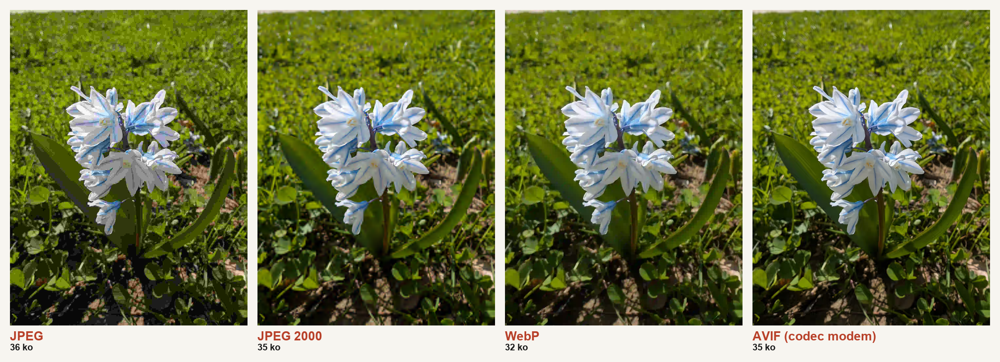
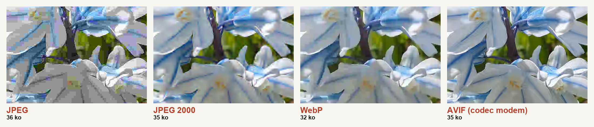

F6KBR · Radio-Club de Perpignan
Un modem audio pour transmettre des images sur la FM amateur
Des bases de la radio numérique jusqu'au modem V3 multi-profil
HB9TOB · projet open source
HB9TOB · projet open source
Au programme
Deux niveaux + une annexe
P1Bits sur une porteuse
P2Chaîne TX / RX
P1Nyquist–Shannon & la limite de Shannon
P2NCO inutile, dérive = DC
P1Modulations & constellations
P2La trame ↔ les blocs RX
P1OFDM (et pourquoi pas en NBFM)
P2Grille & égaliseur FFE
P1FEC : LDPC + RaptorQ
P2Constellations retenues
P1Compression d'image
→Projets futurs
⏸Point d'arrêt : on peut s'arrêter ici
+Annexe — pour les curieux
Contexte
Le problème
- Transmettre des images et des fichiers sur des relais NBFM voix (VHF/UHF)
- Canal audio étroit : ~300 Hz – 2700 Hz, déviation ±2,5 kHz
- En pratique les transceivers amateurs font de la PM → dé-emphase 6 dB/octave imposée au RX (pas la constante 75 µs des FM commerciales)
- Limiteur audio à l'émission : tout dépassement de crête est écrêté
- Pas de canal retour : pas d'ARQ, tout doit reposer sur du FEC
- Cibles matérielles modestes : portable, Surface, Raspberry Pi 4
Questions à la fin,
n'hésitez pas à les noter.
n'hésitez pas à les noter.
~1 h de présentation puis discussion ouverte
PARTIE 1 · NIVEAU DÉCOUVERTE
Faire voyager des bits par la radio
Les briques de base, sans équations méchantes. On pourra s'arrêter à la fin de cette partie — ou continuer sous le capot.
Partie 1 · Le principe
Comment glisse-t-on du numérique dans une onde ?
- Une radio émet une onde : une sinusoïde, la « porteuse ».
- Une sinusoïde n'a que trois réglages : son amplitude, sa fréquence, sa phase.
- Moduler = faire varier l'un de ces réglages au rythme de nos bits.
- Le récepteur lit les variations et reconstruit la suite 1 0 1 1…
- Mais le canal radio déforme l'onde au passage : échos, filtrage, bruit, écrêtage → il faudra la redresser à l'arrivée (égaliseur).
- Tout le jeu : en mettre le plus possible sans que le bruit s'en mêle.
Partie 1 · La règle du jeu (1/2)
Nyquist–Shannon : ne pas être trop pressé
- Échantillonner un son de 3 kHz ? Il faut au moins 2 mesures par période → 6 000 mesures/s.
- Trop peu d'échantillons → repliement (la roue de chariot qui semble tourner à l'envers au cinéma).
- Symétriquement : dans une bande de largeur B, on case environ B symboles/s sans qu'ils se chevauchent.
- Notre canal voix ≈ 2,4 kHz utile → de l'ordre de 2 000 symboles/s. Pas plus.
Partie 1 · La règle du jeu (2/2)
La limite de Shannon : le mur infranchissable
- LA formule reine : C = B · log₂(1 + S/N)
- En clair : le débit max (bits/s) dépend de la largeur de bande et du rapport signal/bruit.
- Deux leviers : élargir la bande (interdit : canal 12,5 kHz) ou améliorer le S/N.
- Personne ne dépasse ce mur. On peut seulement s'en approcher…
- … et c'est tout l'enjeu du codage correcteur (la suite !).
⚠️ Le mur suppose une source d'entropie maximale (du vrai aléatoire). Pour une source à faible entropie (compressible), compresser avant donne l'illusion de dépasser Shannon : en réalité on transmet moins de bits, pas plus vite.
Partie 1 · Moduler
Le vecteur tournant : l'astuce de l'ingénieur
- On représente la porteuse par un vecteur qui tourne (le « phaseur »).
- Sa longueur = amplitude, son angle = phase, sa vitesse = fréquence.
- OOK on l'allume / l'éteint → amplitude
- FSK on change sa vitesse → fréquence
- PSK on saute son angle → phase
Partie 1 · Moduler
Le diagramme de constellation : la carte des symboles
On photographie le phaseur à l'instant de décision → un point dans le plan I/Q. L'ensemble des points = la constellation.
Plus on met de points, plus on transmet de bits par symbole… mais plus le bruit les confond.
QAM = grille (optimal en linéaire) · APSK = points sur des cercles (aime les amplis saturés) · PSK = un seul cercle
Partie 1 · L'autre voie
L'OFDM : une nuée de petites porteuses
- Au lieu d'une porteuse rapide : des centaines de petites porteuses lentes en parallèle.
- Chacune voit un canal quasi « plat » → égalisation facile, grande robustesse aux échos.
- C'est la recette du Wi-Fi, de la 4G/5G, du DAB et de la TNT.
- Élégant… alors pourquoi pas chez nous ? → slide suivante.
Partie 1 · L'autre voie
… mais l'OFDM se sabote tout seul en NBFM
- Additionner des centaines de sinus → de gros pics d'amplitude aléatoires (PAPR élevé).
- Or le relais FM a un limiteur d'écrêtage : il rabote les pics → l'OFDM se détruit lui-même.
- La FM/PM est non linéaire et ajoute du bruit de phase → massacre les constellations denses.
- On a essayé (projet RustPIC)… ça ne passe pas le relais.
- Conclusion : une seule porteuse, mono-fréquence.
Partie 1 · Corriger les erreurs
Le FEC : corriger sans jamais redemander
- En mode broadcast (un émetteur, plusieurs récepteurs), pas de voie retour : impossible de redemander un bout perdu (pas d'ARQ).
- Solution : envoyer de la redondance calculée → le récepteur corrige tout seul.
- Comme un Sudoku : même avec des cases manquantes, les contraintes laissent retrouver le reste.
- FEC = Forward Error Correction — on paie un peu de débit, on gagne énormément de robustesse.
Partie 1 · Corriger les erreurs
Pourquoi DEUX codes : LDPC et RaptorQ
- Deux problèmes différents → deux codes complémentaires.
- LDPC au niveau bits : corrige les erreurs du bruit, très près de la limite de Shannon. Le bouclier de chaque bloc.
- RaptorQ au niveau paquets : code fontaine. On fabrique une infinité de paquets de réparation ; dès que le RX en a reçu assez (peu importe lesquels), le fichier est reconstruit.
- Idéal sans voie retour et en multi-salve (on réémet, le RX accumule).
Partie 1 · Avant d'émettre
Compresser l'image : même budget ~35 ko, 4 codecs
Même photo réduite en Full-HD, encodée à ~35 ko par chacun. À ~2 000 symboles/s, chaque ko se paie en secondes d'antenne : l'efficacité du codec décide de la qualité reçue.

JPEG (1992) → JPEG 2000 (ondelettes) → WebP (VP8) → AVIF (AV1), le codec du modem. AVIF produit par ravif (speed 1), les autres par référence.
Partie 1 · Avant d'émettre
Le détail à la loupe (zoom 1:1, même 35 ko)

À budget égal : JPEG montre ses blocs 8×8 et son ringing ; AVIF garde les contours nets. On compresse aussi les fichiers (zstd) avant transmission.
⏸️ On peut s'arrêter ici.
Pause questions.
La suite passe sous le capot — pour les curieux et les techniciens.
La suite passe sous le capot — pour les curieux et les techniciens.
PARTIE 2 · SOUS LE CAPOT
La chaîne d'émission et de réception
Bloc par bloc, du fichier aux échantillons audio — et retour.
Partie 2 · Émission
La chaîne TX — du fichier au son
- RaptorQ découpe le fichier en paquets et fabrique de la réparation ; LDPC blinde chaque bloc de bits.
- Mapping place les bits sur la constellation, RRC arrondit les transitions pour tenir dans la bande.
- Pilotes & marqueurs sont insérés pour aider le RX ; le préambule et le VOX réveillent le relais.
Partie 2 · Réception
La chaîne RX — le chemin inverse, en plus dur
- Désemphase compense la PM du transceiver ; la détection trouve le préambule dans le bruit.
- Un NCO rattraperait la dérive de fréquence porteuse… mais sert-il vraiment en NBFM ? → slide suivante.
- Synchro horloge (Gardner) recale le rythme des symboles ; le FFE redresse le canal, la DD-PLL rattrape la phase.
- Puis démapping → LDPC → RaptorQ reconstruisent les bits, les blocs, puis le fichier.
Partie 2 · La simplification clef
Le NCO : indispensable en SSB… inutile en FM
- En SSB (USB/LSB), le RX mélange avec un BFO. Un écart de fréquence TX/RX décale tout le spectre audio vers le haut ou vers le bas.
- Un 1000 Hz devient 1100 Hz : voix « Donald », symboles désalignés → il faut un NCO (ou une AFC) pour recentrer.
- En FM/PM, le démodulateur sort la fréquence instantanée. Un décalage de porteuse constant n'est plus qu'un terme continu (DC) ajouté : le spectre audio ne bouge pas !
- Donc : pas de NCO. Un simple bloc anti-DC (passe-haut) suffit ; l'égaliseur + la DD-PLL font le reste.
- On retire le NCO de la chaîne : plus simple, plus robuste.
Partie 2 · La trame
Qui lit quoi dans la trame ?
Chaque partie de la trame nourrit un bloc précis du RX :
| Partie de la trame | Bloc RX qui la consomme | Rôle |
|---|---|---|
| Préambule | Détection | repérer le début, caler l'amplitude |
| Marqueur d'amorçage | Synchro + profil | verrouiller l'horloge, lire le profil (V4) |
| Pilotes continus | FFE + DD-PLL | entraîner l'égaliseur, suivre la phase |
| Segment de données | Démapping → LDPC | les bits utiles, protégés |
| Marqueurs de resync | FFE (re-calage) | rattraper une dérive en cours de salve |
| Fin de transmission (EOT) | Orchestrateur | on décode dès qu'on a assez de blocs (pas besoin d'attendre l'EOT) ; l'EOT clôt la session et on se prépare à une nouvelle transmission |
PARTIE 2 · SOUS LE CAPOT
La structure de trame
D'une trame simple jusqu'à V3 et ses segments cycliques.
Chapitre 08 · Trame originale
Trame des premiers modems (jusqu'à HIGH)
Partie 2 · Trame V4
Trame V4 : plus de header, tout est dans le marker
Partie 2 · Trame V4
Marker d'amorçage, Golay, et warmup après-coup
- Header protocole supprimé. Le marker₀ d'amorçage (128 sym) porte tout : un sync de 32 symboles auto-égalisant + un payload Golay(24,12) + CRC8 → décodable à froid, profil-agnostique.
- profile_index (1 o) + fmt_version = 4 logés dans des octets jadis réservés du marker → coût : 0 symbole de plus.
- Warmup LMS déplacé APRÈS le marker → entraîné sur la bonne constellation (le profil est déjà lu). Fin du bug d'auto-détection HIGH+.
- Le marker se répète avant chaque segment (~toutes les 2 CW) → chaque segment est auto-descriptif, ré-entrée robuste après une coupure.
- 3 familles de préambules (A / B / C) conservées pour éviter les faux verrous entre profils.
Chapitre 08 · TX
Le pipeline d'émission
- Encodage entièrement en RAM dans le processus GUI (in-process, V3Modem.encode_to_samples)
- Chaque étage est traçable : on peut sauver l'IQ ou un WAV intermédiaire pour diagnostic
- PTT (Push-To-Talk) déclenché par le worker, séquencement TX → audio → RX
- Sortie : carte son interne ou SignaLink, jamais par l'entrée micro
- Pas de retransmission ni d'ARQ — l'émission est one-shot avec une fine couche de repair RaptorQ
PARTIE 2 · SOUS LE CAPOT
Le décodeur batch et sa grille
Premier décodeur : prendre tout le WAV, chercher partout, décoder.
Chapitre 09 · Batch RX
Pipeline batch (rx_v2)
Un seul pass sur tout le buffer. Sortie : codewords LDPC → fichier reconstruit par RaptorQ.
Chapitre 09 · Batch RX
La grille de recherche
- Les horloges des convertisseurs A/D (RX) et D/A (TX) — les quartz des cartes son — dérivent l'une vis-à-vis de l'autre, typiquement quelques dizaines de ppm
- Sans correction, le timing glisse et le démap se désaligne
- Détecteur principal : Gardner slope — estime la pente de phase puis rééchantillonne
- Fallback : grille parallèle ±15 ppm en plusieurs points, décodage tenté sur chacun
- Mode Power : grille élargie ±80 ppm pour les cas extrêmes (postes vieillissants)
- Sur ARM, parallélisé NEON 4×4 avec early-exit dès qu'un CRC valide
Chapitre 09 · Batch RX
Le filtre FIR : un « souvenir pondéré » du passé
- FIR = Finite Impulse Response. Pas d'analogue analogique direct, mais on peut le voir comme une ligne à retard à dérivations avec un sommateur
- Structure :
- chaîne de cellules mémoire (chacune = un retard d'un échantillon)
- chaque dérivation a un coefficient w₀, w₁, w₂, …
- sortie = somme des (échantillon retardé × coefficient)
- Avec les bons coefficients on peut faire passe-bas, passe-haut, dé-écho, annuler de l'ISI…
- La force du FIR : les coefficients sont calculables — ou apprenables, par exemple par LMS
Chapitre 09 · Batch RX
DFE : deux FIR, un retour décisionnel
- La DFE empile deux FIR qui font des choses opposées :
- FFE (forward) sur les échantillons reçus — corrige l'ISI causée par les symboles à venir
- FB (feedback) sur les symboles déjà décidés — annule l'ISI laissée par les symboles passés
- Le slicer prend la sortie nettoyée et choisit le symbole le plus proche dans la constellation
- La décision repart dans le FB → boucle fermée
- Avantage du retour décisionnel : il travaille sur du signal propre (les symboles décodés), pas sur du bruité
- Inconvénient : si la décision est fausse, l'erreur se propage (cf. discussion FTN)
Chapitre 09 · Batch RX
Comment on entraîne la DFE
- La DFE a deux jeux de coefficients : FFE (forward, sur l'entrée) et FB (feedback, alimenté par les décisions précédentes)
- Trois phases d'entraînement par LMS :
- Préambule + LMS warmup : symboles connus → erreur exacte → grand μ, w bouge vite
- Data : mode decision-directed — la sortie du démap tient lieu de symbole attendu. Petit μ pour ne pas dériver sur les décisions fausses
- Pilotes TDM (32/2 ou 16/2) : recalage propre avec des symboles connus, toutes les ~30 syms ou plus dense
- Sans LMS warmup, le 64-APSK part en spirale dès les premiers symboles : décision fausse → mauvais update → décisions de plus en plus fausses
Chapitre 09 · Batch RX
LMS — Least Mean Squares, en bref
- Algorithme classique pour filtres adaptatifs : ajuste les coefficients w pour minimiser l'erreur quadratique moyenne
- À chaque échantillon :
- filtre l'entrée : y = w · x
- compare au symbole attendu : e = d − y
- met à jour : w ← w + μ · e · x
- μ = pas d'apprentissage (compromis vitesse / stabilité)
- Converge exponentiellement vers la solution optimale Wiener
- Trop grand → oscille. Trop petit → ne suit pas la dérive du canal
PARTIE 2 · SOUS LE CAPOT
Décoder au fil de l'eau
Du WAV postopératoire à un RX qui décode en direct.
Chapitre 10 · Streaming
Première approche : découper en fenêtres et batcher
- Idée naïve : on capture l'audio, on remplit un buffer de N secondes, on appelle le batch decoder
- Marche pour un signal stable et synchronisé
- Mais : si le préambule tombe à cheval entre deux fenêtres, on le perd
- Et si l'orateur démarre au milieu d'une trame, on rate le 1ᵉʳ cycle
- Et la grille de recherche devient coûteuse à chaque fenêtre
Chapitre 10 · Streaming
Solution : fenêtres glissantes + re-synchro marker
- Fenêtres glissantes avec recouvrement — le préambule n'est plus jamais à cheval
- Le marker tous les 4 s permet de rattraper une trame en cours
- L'estimation ppm est persistée d'une fenêtre à l'autre — pas besoin de tout refaire
- Mode Power : large grille seulement au démarrage, puis on suit en local
- Late-entry recovery : si on a raté le 1ᵉʳ préambule, on peut entrer sur n'importe quel marker
PARTIE 2 · SOUS LE CAPOT
Constellations retenues
De BPSK à 64-APSK : six modulations, dix profils.
Chapitre 05 · Constellations
Le panel des modulations utilisées
Chapitre 05 · Constellations
Constellations réelles, après égaliseur DFE

Ouverture d'œil après DFE 9+5 taps : 8-PSK / 16-QAM / 32-QAM en bench
Chapitre 05 · Profils
Les profils opérationnels
| Profil | Modulation | LDPC | Rs | Débit utile | Usage |
|---|---|---|---|---|---|
| ULTRA | QPSK | 1/2 | 500 Bd | ~0,4 kb/s | liaisons très dégradées |
| ROBUST | QPSK | 1/2 | 1000 Bd | ~0,9 kb/s | fallback générique |
| NORMAL | 8-PSK | 1/2 | 1500 Bd | ~2,1 kb/s | bas débit standard |
| HIGH | 16-APSK | 3/4 | 1500 Bd | ~4,2 kb/s | profil d'ancrage |
| HIGH+ | 32-APSK | 3/4 | 1500 Bd | ~5,3 kb/s | standard OTA |
| HIGH++ | 64-APSK | 3/4 | 1500 Bd | ~6,4 kb/s | SNR élevé, FDX |
| HIGH56 / HIGH+56 | 16/32-APSK | 5/6 | 1500 Bd | +11 % | expérimental |
| FAST · MEGA | 16-APSK | 3/4 | 1714 / 1500 Bd | variables | R&D FTN |
Le déclic 64-APSK
Stabiliser 4 anneaux a forcé deux additions à la trame :
séquence d'entraînement et densification des pilotes.
séquence d'entraînement et densification des pilotes.
Le LMS warmup (32 symboles qui cyclent la constellation) amorce l'égaliseur avant les données.
Les pilotes au pas 16/2 (au lieu de 32/2) gardent la phase verrouillée même sur l'anneau extérieur.
Le LMS warmup s'est propagé à tous les profils V3. La densification 16/2 reste sur ULTRA et HIGH++, là où elle compte.
Les pilotes au pas 16/2 (au lieu de 32/2) gardent la phase verrouillée même sur l'anneau extérieur.
Le LMS warmup s'est propagé à tous les profils V3. La densification 16/2 reste sur ULTRA et HIGH++, là où elle compte.
PROJETS FUTURS
La suite
Ce qui se construit sur les branches.
Chapitre 15 · v3-turbo
Court terme : RX streaming pleinement turbo
- V3Session FSM Acquiring → Locked, validation marker Golay+CRC
- Streaming FFE par codeword, avec re-décodage data-assisted
- Drift pursuit amplitude-invariant — robuste aux variations d'AGC
- Cible : 100 % du débit batch en streaming, sans fenêtrage visible
Projets futurs · QO-100
Moyen terme : QO-100, un canal linéaire
- QO-100 (Es'hail-2) est un transpondeur géostationnaire linéaire : pas de FM, pas de limiteur, pas de désemphase.
- On y accède par un simple décalage de fréquence type SSB (translation), pas une porteuse FM à démoduler.
- Largeur par station bridée à 2,7 kHz par la réglementation — mais le transpondeur reste linéaire sur ~500 kHz.
- Conséquence clé : ces 2,7 kHz sont utilisables à 100 %, linéairement → constellations denses (APSK/QAM), voire OFDM, sans l'écrêtage du relais FM.
- Reste à gérer : dérive Doppler résiduelle / OL, bruit de phase à 10 GHz, drift ppm. Toolchain Pluto prête (
feat/sdr-pluto).
Chapitre 15 · long terme
Long terme : OFDM revisité et HF
- OFDM revisité — en simplex direct, sans répéteur FM, donc sans limiteur audio
- Plus de diversité fréquentielle, plus robuste aux fadings sélectifs
- Cible HF : NVIS / DX, canaux 3 kHz SSB
- Beaucoup de briques déjà transférables : LDPC, RaptorQ, AVIF, framing, sondeur
- Travail en perspective : redesign du préambule pour HF (Doppler spread, multipath fort)
Démo
Émetteur HB9TOB · récepteur en salle
Profil HIGH+ · 1500 Bd · ~5,3 kb/s utile
Profil HIGH+ · 1500 Bd · ~5,3 kb/s utile
Récap
Où on en est
✓ Ce qui marche
- 10 profils opérationnels (QPSK → 64-APSK)
- LDPC + RaptorQ stables
- Trame V4 (headerless) — re-synchro toutes les 4 s
- GUI Tauri, CLI, multi-plateformes
- SDR : RTL-SDR validé OTA
- Pi 4 / aarch64 supporté
- Sondeur de canal dual-BW
⚙ En cours / à venir
- RX streaming turbo complet
- QO-100 full-duplex
- Pluto FDX coordonné
- OFDM revisited (simplex)
- HF / SSB
- Plus de profils (HIGH+56, HIGH56)
Questions ?
HB9TOB · projet open source
github.com/hb9tob/NewModem
Merci pour votre attention.
github.com/hb9tob/NewModem
Merci pour votre attention.
73 !
Merci au Radio-Club de Perpignan F6KBR.
HB9TOB · projet open source
github.com/hb9tob/NewModem
HB9TOB · projet open source
github.com/hb9tob/NewModem
ANNEXE · POUR LES CURIEUX
Les détours du projet
Tout ce qu'on a exploré en route : OFDM RustPIC, étude du canal, APSK/FTN, sondeur, SDR, low-power.
ANNEXE · POUR LES CURIEUX
RustPIC — la tentative OFDM
Première itération du projet : tout miser sur la diversité fréquentielle.
Chapitre 01 · RustPIC
Architecture OFDM
- FFT = 1024, préfixe cyclique 256, fs = 48 kHz
- 42 sous-porteuses actives (562 – 2484 Hz)
- BPSK / QPSK / 16-QAM / 32-QAM / 64-QAM
- FEC en cascade : RS(255,k) outer + LDPC 802.11n (1/2 à 5/6)
- Préambule Zadoff–Chu, re-sync ZC tous les 12 symboles
- Débit brut max 810 b/s en 64-QAM
Chapitre 01 · RustPIC
Pourquoi on a abandonné
- PAPR ≈ 10–12 dB : l'OFDM additionne les sous-porteuses en phase → crêtes énormes que le limiteur audio écrête sans pitié
- Violents sauts de phase en bas de bande sur le canal NBFM → empêchent d'élargir la grille de sous-porteuses vers le HPF (300 Hz)
- Plus on multiplie les porteuses, plus on cumule les deux problèmes → plafond de débit atteint vite
- Confirmation empirique : HSMODEM (single-carrier) passe en clair, HamDRM (OFDM) sort distordu
- Pivot vers le single-carrier large-bande à symboles APSK.
ANNEXE · POUR LES CURIEUX
L'étude du canal NBFM
Avant de moduler quoi que ce soit, comprendre ce que le poste fait au signal.
Chapitre 02 · Étude canal
Méthode : sweeps multi-niveaux, mode FM vs mode FM-data
- Banc : FT-991A en TX, FTX1 en RX
- Injection audio par carte son interne du TX ou interface type SignaLink (jamais par l'entrée micro)
- Le transceiver bascule entre mode FM (voix, limiteur + filtres) et mode FM-data (chaîne audio plate)
- Signaux de test : multitons et balayage à plusieurs niveaux d'entrée
- Mesure : gain, réponse en fréquence, group delay, non-linéarité de phase
- Simulateur calibré sur ces mesures — RMS < 1,2 dB

Mode FM (avec limiteur) vs Mode FM-data (linéaire)
Chapitre 02 · Étude canal
Mode data : linéaire sur 20 dB de plage

Mode FM-data : gain constant –6,5 dB. Mode FM (voix) : s'effondre dès que le limiteur travaille.
Chapitre 02 · Étude canal
Group delay : ~1 ms de variation dans la bande utile


À gauche : delay vs fréquence (filtres HPF/LPF). À droite : non-linéarité de phase ~40°, stable avec le niveau.
Conclusions canal
Bande utile 300 – 2200 Hz.
Mode data linéaire dans cette plage.
Group delay compensable par égaliseur.
Mode data linéaire dans cette plage.
Group delay compensable par égaliseur.
→ On peut viser une modulation à symboles, fenêtrée, avec égalisation adaptative.
ANNEXE · POUR LES CURIEUX
16-APSK, xQAM et les essais FTN
Comment monter en débit sans gicler dans le limiteur ?
Chapitre 03 · Modulations
Pourquoi 16-APSK et pas 16-QAM ?
- 16-QAM : 4 niveaux d'amplitude distincts → dynamique >10 dB
- Tension de bruit IF : après démod FM/PM, la composante de bruit qui retombe sur l'amplitude fixe la borne basse de l'écart entre niveaux. 4 niveaux (QAM) demandent ~3 dB de SNR de plus que 2 anneaux (APSK) à BER équivalent
- En plus, le limiteur du transceiver rabote les crêtes : il « voit » mieux 2 niveaux que 4
- 16-APSK : 2 anneaux, comme du DVB-S2 → enveloppe plus douce et marge de bruit récupérée
- Coût : un demap un peu plus complexe (anneaux + angles)

SPS=40 : 8PSK vs 16-APSK
Chapitre 03 · Modulations
Cartographie BER : trouver le sweet spot

Heatmap BER (Rs, β) — Nyquist τ=1

BER en multipath, balayage τ FTN
Sweet spot identifié : Rs = 1500 Bd, β = 0,20 – 0,25, 16-APSK
Limites des essais denses
FTN < 0,92 et 32/64-QAM denses
tombent dans le genou BER.
tombent dans le genou BER.
L'ISI volontaire (FTN) crée une dépendance forte à la DFE
(Decision Feedback Equalizer — soustrait l'ISI à partir des symboles déjà décodés).
Une décision fausse → mauvaise soustraction → l'erreur se propage sur les symboles suivants.
→ On reste à τ = 1 et on ouvre la voie aux profils APSK multi-anneaux.
(Decision Feedback Equalizer — soustrait l'ISI à partir des symboles déjà décodés).
Une décision fausse → mauvaise soustraction → l'erreur se propage sur les symboles suivants.
→ On reste à τ = 1 et on ouvre la voie aux profils APSK multi-anneaux.
ANNEXE · POUR LES CURIEUX
Pilotes continus et choix de débit
Suivre la phase et la dérive d'horloge sans dépenser trop de symboles.
Chapitre 04 · Pilotes
Où placer le pilote ? Spectres et métriques

Spectres pour différentes positions du pilote

SNR, clarté, stabilité de phase par fréquence pilote
Chapitre 04 · Pilotes
Mono vs dual pilotes
- Mono 400 Hz : meilleur SNR (~21 dB), suffit pour PLL
- Dual 400 / 1800 Hz : la pente Δφ entre les deux estime la dérive horloge
- Mesure typique : −16 ppm de dérive d'oscillateur, traquée en temps réel
- Approche écartée sur V3 au profit des pilotes TDM — pas une porteuse continue, mais des symboles connus intercalés dans le flux data (détaillé slide suivante)

Performance comparée mono / dual
Chapitre 04 · Pilotes TDM
Pilotes TDM : comment ça marche
- Pas de porteuse séparée — ce sont des symboles QPSK connus insérés à des positions fixes dans le flux data
- Pattern V3 = d_syms / p_syms : un groupe = N symboles data + N symboles pilotes
- Standard 32/2 : 32 data, puis 2 pilotes, répété — 1 mesure tous les 34 symboles
- Dense 16/2 (ULTRA, HIGH++) : groupes deux fois plus courts → ~2 × plus de mesures par seconde
- À chaque pilote, le RX a un point « propre » qui sert à :
- mettre à jour la phase (PLL)
- estimer le gain et corriger l'AGC
- raffiner les coefficients FFE / DFE
- traquer la dérive d'horloge
Choix de débit
1500 Bd × 2 à 6 bits/symbole
= 3 à 9 kb/s utile
= 3 à 9 kb/s utile
Rs = 1500 Bd, β = 0,20, 16/32/64-APSK, LDPC 3/4. Le reste suit.
ANNEXE · POUR LES CURIEUX
LDPC, RaptorQ et le code fontaine
Deux étages de FEC pour deux types d'erreurs.
Chapitre 06 · LDPC
LDPC — l'étage inner
- Code WiMAX IEEE 802.16e, N = 2304 bits (z = 96)
- Rates supportés : 1/2 · 2/3 · 3/4 · 5/6
- Décodage soft (LLR), algorithme LNMS — Layered Normalized Min-Sum
- α = 0,75, jusqu'à 50 itérations
- Gain ~6 dB sur le bit channel par rapport au uncoded
- Corrige les erreurs bit par bit à l'intérieur d'un codeword

BER post-LDPC vs SNR — rates 2/3 et 3/4
Chapitre 06 · RaptorQ
RaptorQ — le code fontaine
- Code fontaine normalisé RFC 6330
- K paquets source → on émet K + un peu de repair — 3 à 5 % suffisent en pratique sur ce canal
- Le RX collecte n'importe lesquels K + ε → reconstruction
- Pas d'ARQ, pas de retransmission ciblée nécessaire
- Robuste aux pertes en rafale (canal qui « décroche »)
- Combiné avec LDPC : LDPC corrige les bits, RaptorQ encaisse les codewords entiers perdus
Le principe du code fontaine
« Verse jusqu'à ce que le seau soit plein. »
L'émetteur produit un flux quasi infini de symboles repair.
Le récepteur ramasse ce qui passe le canal. Dès qu'il en a K + ε, il reconstruit l'original.
Pas d'ordre, pas d'ARQ, pas de retransmission ciblée.
Le récepteur ramasse ce qui passe le canal. Dès qu'il en a K + ε, il reconstruit l'original.
Pas d'ordre, pas d'ARQ, pas de retransmission ciblée.
ANNEXE · POUR LES CURIEUX
Couche applicative : compression et fichiers
Que met-on dans le tuyau, et comment on l'emballe ?
Chapitre 07 · Source coding
Images : compression AVIF
- AVIF = AV1 Still Image, codec moderne issu de la vidéo
- Meilleur rapport taille / qualité que JPEG ou WebP sur images naturelles
- Encodage lent — mais on émet peu et rarement, donc on l'absorbe en TX
- Slider qualité (1–100) dans la GUI, chroma 4:2:0
- Passthrough : si la source est déjà AVIF, on ne ré-encode pas
- Permet d'envoyer une image utile en quelques kilooctets
~30 ko
une image 1920×1080 de bonne qualité
en AVIF
en AVIF
soit ~40 s sur HIGH+
ou ~60 s sur HIGH
ou ~60 s sur HIGH
Chapitre 07 · Fichiers
Transmission de fichiers génériques
- Le modem n'est pas limité aux images : n'importe quel binaire passe (texte, ZIP, JSON, log…)
- Le crate
modem-framingisole la couche applicative : enveloppe + AppHeader + RaptorQ + CRC - Pour les non-images, compression zstd sans perte appliquée avant RaptorQ
- Un octet mime_type dans l'AppHeader signale au RX comment ouvrir le payload : 0 binary 1 text 2 image/avif 5 zstd
- Le RX décompresse / affiche / propose à l'enregistrement selon le type
ANNEXE · POUR LES CURIEUX
modem-2x → V3-Turbo
Une réécriture ambitieuse, consolidée pragmatiquement.
Chapitre 11 · modem-2x
L'ambition de modem-2x
- Réécriture complète de la chaîne RX, autour du streaming pur
- TED Gardner + interpolation Farrow à la place du resampler polyphase
- FFE turbo par codeword (re-décodage data-assisted après LDPC)
- Pilotes inspirés DVB-S2X, gestion de session via marker
- Sondeur de canal intégré (dual-BW Golay)
- Objectif : décoder en streaming sans jamais retomber sur le batch
Chapitre 11 · V3-Turbo
Verdict : consolidation, pas abandon
- Le streaming pur s'est révélé fragile : trop d'estimateurs à converger en cascade
- Bonnes idées : Gardner + Farrow + turbo FFE + channel sounder
- Décision : extraire ces blocs en
modem-core-baseetmodem-worker-base - Nouveau backbone
feat/v3-turbo= V3 stable + briques 2x utilisables à la carte - V3Session FSM : Acquiring → Locked, avec validation Golay+CRC du marker
- État actuel : v0.13.x stable, dev actif streaming FFE par CW + sondeur
ANNEXE · POUR LES CURIEUX
Le sondeur de canal
Mesurer le lien avant de choisir le profil.
Chapitre 12 · Sondeur
Les paires complémentaires de Golay
- Inventées par Marcel Golay (1949). Une paire de séquences binaires A et B de même longueur N (typiquement une puissance de 2)
- Chacune prise seule, son autocorrélation a un pic central plus des sidelobes (parasites)
- Propriété magique :
RA(k) + RB(k) = 2N · δ(k)les sidelobes s'annulent exactement en additionnant les deux corrélations.
- Construction récursive : à partir d'une paire de base on double sa longueur indéfiniment
- En pratique : on émet A, puis B, on corrèle séparément côté RX, on additionne → réponse impulsionnelle propre du canal
Chapitre 12 · Sondeur
Application : sondeur dual-BW
- Émission de séquences Golay complémentaires — leurs autocorrélations s'additionnent en pic parfait
- Émises sur deux bandes passantes différentes (étroite et large)
- Le RX corrèle et extrait la réponse impulsionnelle du canal
- La différence entre les deux mesures sépare multitrajet (étalement temporel) et group delay (filtre du transceiver)
- Affichage temps réel dans l'onglet « Canal » de la GUI
- Aide à choisir : trajet propre → HIGH++ ; trajet multipath → restez sur NORMAL/HIGH
Chapitre 12 · Sondeur
Pourquoi distinguer multipath et group delay ?
- Group delay : déterministe, stable — la DFE le compense très bien
- Multipath : dépendant de la propagation, peut être variable — typiquement traitable par DFE mais coûteux en marge SNR
- Confondre les deux fait sous-estimer le multipath et choisir un profil trop dense
- Avec le sondeur, on diagnostique avant la transmission longue
ANNEXE · POUR LES CURIEUX
Intégration SDR
Brancher le modem sur du matériel radio direct, sans poste FM intermédiaire.
Chapitre 13 · SDR
Cinq crates, plusieurs backends
| Crate | Rôle | Particularité |
|---|---|---|
| modem-sdr | Trait commun SdrBackend | API unifiée RX / TX |
| modem-pluto | PlutoSDR (TX + RX) | iiod en TCP pur Rust, Windows + Linux |
| modem-rtlsdr | RTL-SDR Blog V3/V4 (RX) | libloading runtime — GUI sans SDK |
| modem-sdrplay | SDRplay RSPduo (RX) | bindgen dynamic lib |
| modem-sdr-dsp | DSP NBFM partagée | quadrature_demod, dé-emphase, resample |
Chapitre 13 · SDR
Pipeline RX SDR
Tout le DSP NBFM est dans modem-sdr-dsp, partagé par tous les backends.
Validation terrain
RTL-SDR V4 + Surface Pro 7
HIGH++ FDX décodé à 26 dB SNR
HIGH++ FDX décodé à 26 dB SNR
Commit
Confirme qu'on peut faire du FDX 6 kb/s sur un dongle à 30 €.
9ab89d0 · mai 2026 · profil release optimiséConfirme qu'on peut faire du FDX 6 kb/s sur un dongle à 30 €.
ANNEXE · POUR LES CURIEUX
Optimisation low-power
Faire tourner le modem sur un Raspberry Pi 4 sans le brûler.
Chapitre 14 · ARM / aarch64
Optimisations build et runtime
- target-cpu=cortex-a72 + NEON activé pour aarch64
- Profile release aggressif : LTO fat, codegen-units=1, panic=abort
- Bench : RX idle FFT ramenée de 250 ms à 22 ms par tick
- PreambleProbe parallélisée par template (rayon / NEON)
- Grille de sécurité parallèle 4×4 avec early-exit dès qu'un CRC valide
- Power Mode spécifique low-power :
- grille ±80 ppm large pour rattraper TCXO médiocres
- FSM réactive — pas d'activité tant qu'aucun préambule détecté
- timeout strict 6 s sans préambule → idle complet
- Quota lowpower : limite le nb. de candidats par tick
- Soft-resets propres : on jette le buffer mais on garde l'estimation ppm de session